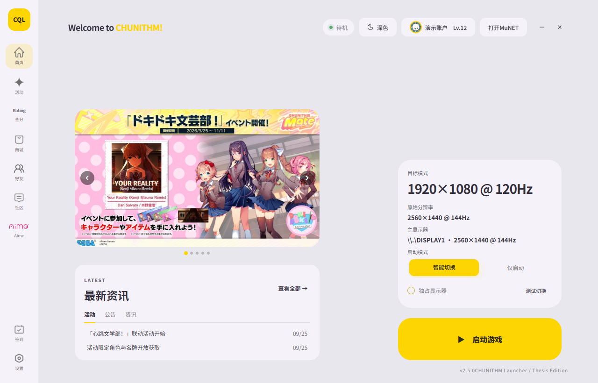
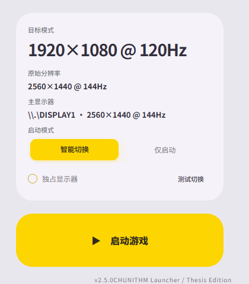
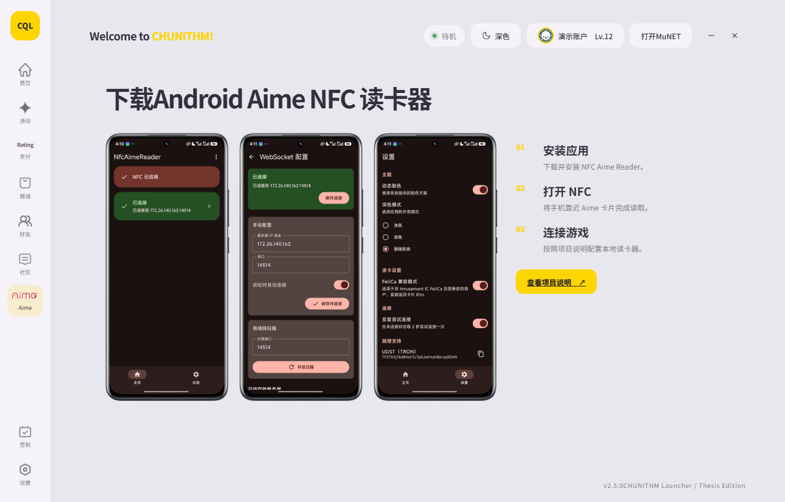
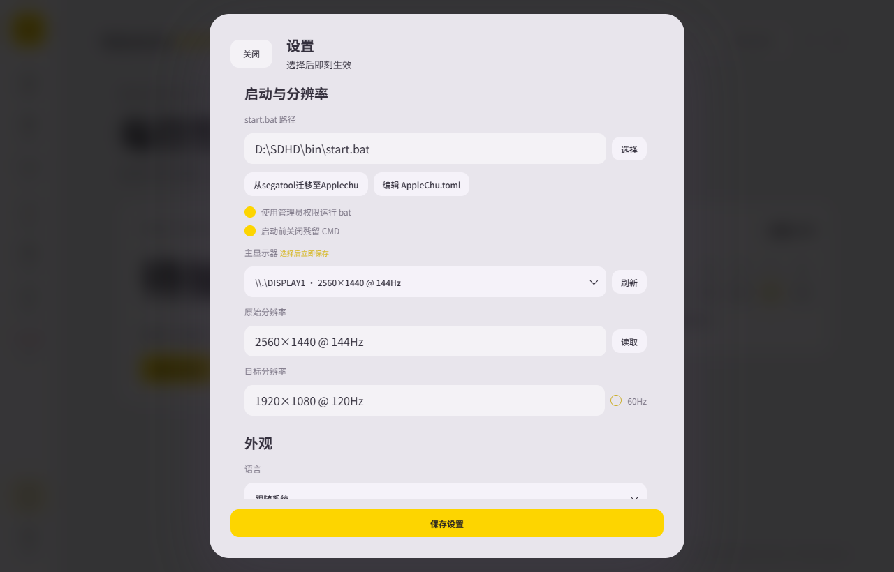

A—01 / HOME首页
启动状态、活动资讯和目标显示模式在同一视野，减少页面切换。打开首页即可确认关键状态，直接找到启动入口。
INTERFACE STUDY
核心功能：启动游戏时快捷切换分辨率，免去繁琐的手动调整；首页展示活动轮播与最新资讯，并提供 Aime 和本地启动配置。

从手动切换，到可被记住的流程
CHUNITHM 常常需要在固定的分辨率和刷新率下运行。启动器将显示器读取、切换、游戏监测和恢复整理成一条连续流程，让用户只需要确认一次，然后开始游玩。

切换参数和启动入口同屏呈现，减少开始游玩前的手动调整。
本地 ui / thesis-features
启动状态、活动资讯和目标显示模式在同一视野，减少页面切换。打开首页即可确认关键状态，直接找到启动入口。

用真实应用画面配合编号步骤，依次说明安装应用、开启 NFC 和连接游戏。把操作顺序直接呈现在页面中，可以降低首次接触读卡器时的不确定感，让用户知道从哪里开始、接下来做什么。

按照启动路径、显示器与分辨率、外观等任务分组，并让输入控件和对应说明保持邻近。底部固定保存按钮减少长弹窗中的来回寻找，让用户完成配置后能明确提交更改。
One flow, three moments
BEFORE PLAY
AT LAUNCH
AFTER PLAY
确定性工作交给程序
CHUNITHM LAUNCHER / PROJECT END
一个围绕真实使用场景展开的启动器设计实验。
返回顶部 ↑